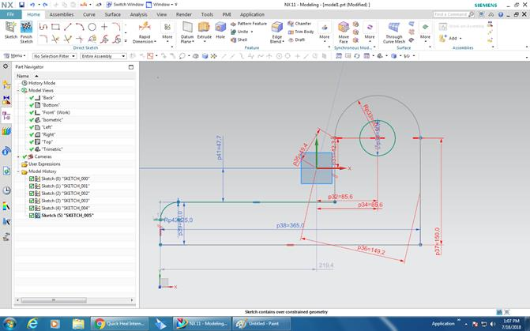

Web Hoting
GitHUb is a free developer platform for hosting
open source to business. It is commonly used to host open-source software
projects. Where we host our free website. The
link of my site www.sarwarshahidi.github.io
Learning
outcomes
1. We have learnt about the
several importance features of Github such as
installing Github software, Create a repository, and
uploading files.
Laser Cutting
Laser
cutter is a technology which is comparatively new compared to other machine tools.
Here a laser beam is used to cut material with high precision using CNC(Computer Numeric Control). It is widely used in
industries but it also used for research and other professional works.
Laser cutter used a precision CNC which
control the movement of laser beam generated by a laser gun. Depending on it’s operation laser cutter uses
diverse range of laser guns from few watts to thousands of watts. It is hard to
read a book under a 10W light bulb but using that much power in a laser it can
make a hole through the book in seconds. Because the power of normal light spraid around all sides and the distance it travels it’s power decrease for per unit of area. On the other side
laser light travels in a line, so the power travels through a narrow line which
don’t spread it’s power
while traveling.
In laser cutter a
laser ray is sent from a laser beam generator and sends to the cutting head
through an optical system and the laser beam is then concentrated by a lens.
Hence the concentrated energy is used to cut the material.
A system of
chain/belt driven by stepper motor is used to move the cutting head up on the
cutting belt. The position of cutting head is defined by G Code using cam
software. Any CAD software may be used to design for a laser cutter.
The main benefit of
using laser is the west of material is very low. It also more energy efficient
compared to other machine tools.
Deign software/CAD software: CAD(Computer Aided Design) software are used to design for
laser cutter and most of the time the design is in 2d. Solidworks,
Autocad, autodesk
fusion360, NX are mostly used cam software for industrial cutting.
NX 11.0
NX is mostly use to
design components for automobile in machine manufacturer. Complex designs can
do by NX.

Onshape: it’s an online platform to
design. Unlike other CAD software it’s free to use.
Cutting
in laser cutter the design must be converted into G code and send to
controller. And a CAM software do the work. Design
file from NX or Onshape is converted in .dxl
extension file. Then the .dxl file is imported in CAM software like RDWorks. And RDWorks generate the
G code to cut according design.
Parameter
to set in cutting is important. Two important parameters are intensity of laser
and cut speed.
Learning outcomes:
1. basic concept of 3D
modeling using NX 11.0 software